Chapter 11
The pawn centre
11.1 Introduction
Soon after learning the chess rules, we discover that the centre plays an important role. In principle, the centre is the place where the pieces develop the greatest activity. The influence the pieces have in the enemy ranks also plays an important role.
We are going to try and increase this understanding with a little experiment. Put a queen on e1 on an empty board. If we define the sixth, seventh and eighth rank as the ‘enemy regions’, the queen on e1 controls three squares in that area. If we now play ♕e1-e5, we see that the number of squares has been tripled with one blow.
In this chapter, another aspect of play in the centre is put forward: the power of a pawn pair in the middle of the board. Particularly when the pawns march forward in groups (i.e., next to each other), they are sometimes capable of leaving behind a trail of destruction.
Since a pawn has the least value – and is therefore the least vulnerable –, it can successfully drive away enemy pieces. We can view connected pawns in the centre as a kind of army unit that marches on irresistibly if no obstacles are thrown in its path.
It is clear that White has fantastic compensation for the sacrificed pawn. After
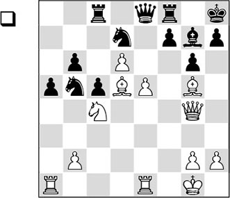
1.e6!
the black player called it a day. White’s final move leaves him no hope, as after 1…fxe6 2.♗xe6, heavy material losses cannot be avoided.
I remember that Tisdall, who always had a much higher Elo rating than I had, was flabbergasted. I have rarely met such a sporting opponent: despite this crushing defeat he was still prepared to analyse extensively and in a friendly tone. Much later I discovered that he had become a respected trainer who has published a very nice book: Improve your Chess Now.
A pawn pair in the centre is strong if the pawns can be pushed forward side by side. In such cases we speak of a ‘mobile pawn centre’. The opposing side will have to try and put a stop to this pawn pair by blocking it, or slow it down in some other way. Before we discuss this defensive strategy, we will first study how the enemy can be trampled underfoot by a central pawn pair.
The following fragment beautifully illustrates the power of such a tandem.
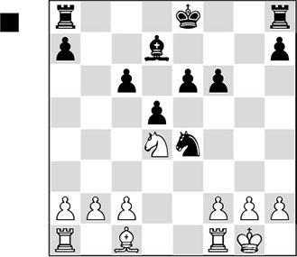
Black has two pawns in the centre, whereas White doesn’t have a single one there. Since White is not able to block this mobile centre, the black pawns can roll on unhindered.
1…c5 2.♘e2 ♔f7 3.f3?! ♘d6 4.b3?!
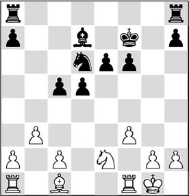
A very unfortunate move in combination with his previous one. With the pawn move f2-f3 White has relinquished the e3-square, and this last move gives Black an important target with actions like …c5-c4, with which Black threatens to open the c-file for his rooks.
4…e5 5.♗a3 ♖ac8 6.♖ad1 d4 7.♘c1
7.f4 is simply met by 7…♔g7.
7…♘f5
The knight jumps into the hole.
8.♖f2 ♘e3 9.♖e1 c4 10.b4
The white pieces are completely helpless. Against Black’s superior pawn centre he has no answer.
10…♗a4 11.♖ee2 ♘d1 12.♖f1 ♘c3 13.♖ef2 ♘b1 14.♗b2
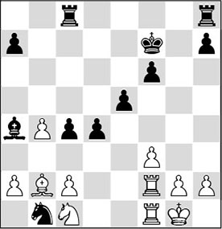
14…c3
And Black cashed in the point on move 42.
It is clear that the opposite side must take measures to attack a central pawn mass in good time. What measures these are, and how he can operate successfully against a pawn centre, we will see in 11.3. But first we will discuss the advantages of a strong pawn centre, and how these can be put into good use.
11.2 When is a pawn centre strong?
Especially in cases where the opponent is not able to attack the centre, he will be forced to sit and watch how the attacker exploits his advantage. We distinguish three specific cases:
A) Mobile pawn centre
Usual consequence: attack on the king.
B) Static pawn centre
Usual consequence: attack on the flank.
C) Restricted pawn centre
Usual consequence: play elsewhere on the board.
A) Mobile pawn centre
We have said before that according to Aron Nimzowitsch, pawns possess an intrinsic ‘lust to expand’. If central pawns are mobile, their collective march can quickly decide a game. Pawns are capable of driving enemy pieces from their defensive positions. Furthermore, in a number of cases – with a little help – they can break open a king position. This often leads to the emergence of tactical motifs.
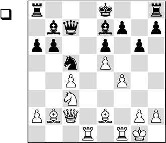
In this position, White has a little more space for his pieces, as well as a slight lead in development, since Black has not yet castled. If White doesn’t act quickly, he will soon be confronted with the weakness of his pawn on c4.
18.♘d5!
A magnificent knight sacrifice, the compensation for which is based on the mobile pawn duo in the centre that will soon be formed.
18…exd5 19.cxd5 ♕c8 20.e6
Opening the long diagonal, which increases the power of the bishop on b2.
20…0-0 21.♕c3 f6
Black is forced to play this move, but after this he cannot prevent White getting his two centre pawns on the sixth rank.
22.d6 ♘a4!
For now, Black is defending excellently. After 22…♕d8 23.♗c4!, he would have been much worse off.
23.♕xc8 ♖fxc8 24.♗a1
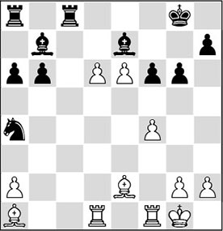
24…♖c2?
But now Black does cave in. The rook should not leave the back rank, but Black has put his trust in this variation, as he thinks he has a great defence.
After 24…♗f8, with 25.♗xf6, White would keep all options open for the further advancement of the pawns.
25.dxe7 ♖xe2 26.♖d8+ ♔g7 27.♖c1!
Petrosian is not to be fooled. White certainly should not promote with 27.e8♕ on account of 27…♖xg2+ 28.♔h1 ♖g3+, and Black gives mate.
27…♖xe6
It looks as if Black has everything under control; the e8-square is indirectly protected now.
28.♖c7!
Apparently the German had missed this move! White now threatens to queen with discovered check.
28…♔h6 29.♗xf6!
White continues to play very strongly. The move 29.♖xb7 was also far from bad, although then he would have had to calculate 29…♖xe7. After 30.♖xe7 ♖xd8 31.♗xf6 ♖d5! 32.g4, the black king is also caught in a kind of mating net.
29…♗e4 30.♗g5+
Black resigned, as after 30.♗g5+ ♔h5 31.e8♕ ♖xe8 32.h3!! h6 33.g4#, it is really mate!
B) Static pawn centre
With a static centre we mean a central formation that is stable. This means that it cannot be attacked by the opponent in the short term. We are not necessarily talking about a fixed pawn centre, as occurs in some variations of the French or the King’s Indian Defence. We may also consider building a ‘concrete block’, as occurs in the London System (1.d4 ♘f6 2.♘f3 e6 3.♗f4 d5 4.e3 c5 5.c3).
If the opponent has castled, we would like to start an attack on his king. Setting up such an attack can be done either with pieces or with pawns. Generally, the intention of a pawn march on the flank is to tear down the enemy king’s position. Once a breach has been made, the attacker’s own pieces are ready to intervene.
However, such a flank attack with pawns is not without risk. The rule of thumb is that we can only start such an action on the flank if the centre is stable. If that is not the case, then the opponent’s natural reaction to a flank attack is to strike back in the centre. If the centre is opened, the flank attack may turn out to have an entirely contrary effect. The space that has been abandoned behind the pawns on the flank can often be excellently exploited by the opponent.
We give an example of a central action as a reaction to a (rather unfounded) flank attack.
CK 2.10 (B13)
1.e4 c6 2.d4 d5 3.exd5 cxd5 4.♗d3 ♘c6 5.c3 g6 6.♗f4 ♘h6
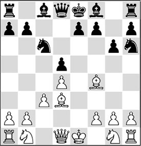
7.h4?!
An early flank attack, which Black counters with a powerful action in the centre.
7…f6!? 8.♗xh6?!
This is a curious exchange, but its motivation is that White wants to exploit the fact that Black’s pieces are standing on the edge of the board.
8…♗xh6 9.h5 ♔f7!
Oddly enough, the king is perfectly fine here!
10.♕c2 ♔g7 11.♘d2
White could not go for 11.hxg6 hxg6 12.♗xg6 on account of 12…♗d2+ 13.♘xd2 ♖xh1.
11…e5
Black does not beat about the bush; the time is already ripe to push the central pawns forward!
12.dxe5?!
The consequences of this move are already well nigh disastrous, as now Black’s pawn centre becomes mobile already.
12…fxe5 13.0-0-0 e4 14.♗e2
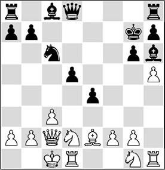
14…d4! 15.cxd4
It is not so easy for Black to find the right answer to 15.♕xe4. After the game we found that 15…♗f5 was the best move. After 16.♕f3, the best for Black is to mobilize the rest of his troops: 16…♕c7! 17.hxg6 hxg6 and now, for instance, 18.♘h3 fails to 18…♘b4, and the mate can hardly be parried.
15…♘xd4 16.♕c3 ♗f5 17.hxg6 ♖c8 18.♗c4
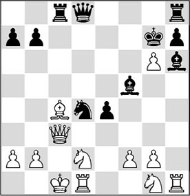
18…♗g5?!
The black player thought that the activity he was exercising along the c1-h6 diagonal was of greater importance than winning a piece with 18…b5. For a while it looked as if White could have resisted with 19.♖xh6 ♔xh6 20.♕e3+, but this turns out to be an illusion: 20…♕g5! ends all resistance, since 21.♕xd4 is not possible in view of 21…♖xc4+. In short: Black could simply have collected a piece.
19.♖h5?!
After this new inaccuracy, things go rapidly downhill for the white player. But also after 19.♘e2 ♖xc4! 20.♕xc4 ♘xe2+ there was little hope of salvation: 21.♕xe2 ♕c7+ 22.♔b1 e3+, and with two pieces for a rook Black will probably be able to cash in the point.
19…♔xg6 20.♖xg5+ ♕xg5
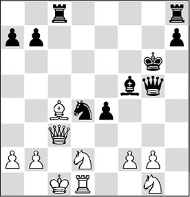
21.g4
The white player could also have resigned, as there is no salvation. For example, 21.♕xd4 does not work in view of 21…♖xc4+ 22.♕xc4 ♖c8. Neither does 21.♔b1 e3+ 22.♔a1 ♘c2+ or 21.♘h3 ♘e2+ 22.♔c2 e3+ 23.♔b3 ♘xc3 24.♘xg5 ♘xd1 offer any solace.
21…♗xg4 22.♔b1 ♗xd1 23.♕xd4 ♖hd8 24.♕xe4+ ♕f5
0-1
In the above we have seen the possible consequences of a central position that is broken up during a flank attack. In the following example, White does adhere to the above-mentioned strategy, i.e., that of first securing the centre.
VO 22.1 (A40)
1.d4 e6 2.c3 d5 3.♗f4 ♘f6
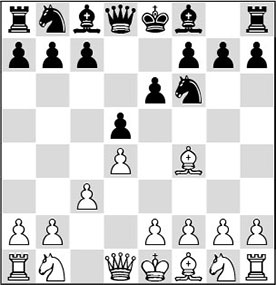
4.e3
From the beginning, White builds a strong pawn centre. Since it is not easy for Black to undertake anything against such a solid set-up, the latter is sometimes compared with ‘pouring concrete’. The sympathetic Dutch IM with the appropriate name Jan van de Mortel (Dutch for ‘mortar’), who now lives in the United States, is known to favour this set-up with white.
4…c5 5.♗d3 ♘c6 6.♘d2 ♗e7
A little passive, and it does not undertake anything against the influence that White will shortly exercise on the centre. 6…♗d6 was to be preferred.
7.♘gf3
Many players first play 7.h3 here, so as to keep the f4-bishop on the board.
7…0-0
7…♘h5 deserved attention.
8.♘e5!
White waits with castling, as he has other plans!
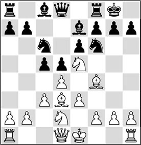
8…♖e8
Once again, Black gives his opponent free hand in the centre. He should have played 8…cxd4, with the possible continuation 9.exd4 ♘xe5 10.dxe5 ♘d7 11.♕h5 f5!, and for the time being Black has little to fear. 12.g4 can be met by 12…♘c5 13.♗c2 ♘e4, and if White plays 12.f3 first, then 12…♕c7 is the right answer.
After the text move, White rules supreme in the centre, and he can operate on the flank without any risk. With his following move, he starts throwing his weight around and introduces an attack.
9.g4
According to the Yugoslav theoretician Vukovic the text move is the introduction to the so-called ‘bayonet attack’.
9…♘xe5 10.dxe5 ♘d7

11.g5
Now 11…♗xg5 is met by 12.♕h5 h6 13.♖g1 ♗xf4 14.exf4, when White can make excellent use of the open g-file. The more or less forced reply 14…♔f8 is met by 15.♕g4 g6 16.♗xg6!, after which the white attack is decisive.
If he had gone 11…♕c7? it would have become clear how great Black’s problems already are. The intention is to attack the pawn on e5, but this queen move turns out to be highly unfortunate after 12.♗xh7+! ♔xh7 13.♕h5+ ♔g8 14.g6! fxg6 15.♕xg6, and the black rook is unprotected: 15…♖d8 (15…♖f8 does not help either after 16.♕xe6+ ♖f7 17.♕xf7+! ♔xf7 18.e6+, followed by 19.♗xc7) 16.♖g1 ♗f8, and now White crowns his attack with 17.♕xe6+ followed by 18.♕f7.
11…♘f8 12.h4 ♗d7 13.♕g4
Slowly the extent of the military force that is being concentrated before the enemy headquarters becomes visible.
13…♗c6 14.0-0-0 b5
Black is in dire straits, but of course this action is long overdue.
15.h5 c4
No question mark – the white attack cannot be stopped anyway.
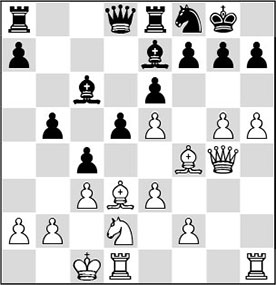
16.♗xh7+!
A standard combination, in an original form. The intention is to dismantle Black’s kingside and to open a file.
16…♘xh7 17.g6 ♘g5
Black thought he could delay the assault with this move, but after the following powerful blow his position collapses.
18.♘e4!!
An effective pseudo-sacrifice, eliminating an important black defender – the knight.
18…♘xe4
Also after a queen sacrifice like 18…dxe4 19.♖xd8 ♖axd8 20.♗xg5, Black has nothing to hope for.
19.gxf7+ ♔xf7 20.♕g6+
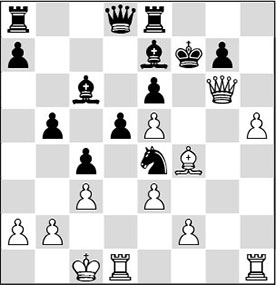
20…♔f8
After this move, the rest is easy.
In the event of 20…♔g8, the attack would also have gone like clockwork. After 21.h6 ♗f8 22.♖dg1 ♖e7, White would have had to continue with 23.hxg7! (not the attractive but in this case mistaken queen sacrifice 23.♕h7+?, which does not have the desired effect: 23…♔xh7 24.hxg7+ ♔g8 25.♖h8+ ♔f7 26.g8♕+ ♔e8 27.♕xf8+ ♔d7, and Black remains a piece up) 23…♗xg7 24.♖h7 ♕f8 25.♖gh1, with mate next move.
21.h6 ♗f6 22.hxg7+ ♗xg7
White has invested quite a lot of material to make his way towards the black king, and now he sacrifices even more, in order to round off the attack in style.
23.♖h8+! ♗xh8 24.♗h6+ ♔e7 25.♕h7+
1-0
If we possess a strong centre, we can attack to our heart’s content. This observation was already made by the old masters. Modern masters often make good use of old wisdom.
One of the greatest attacking artists of recent times is Garry Kasparov. Here is one of his masterpieces.
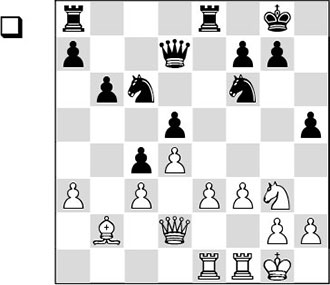
With …c5-c4, Black has given up the pressure on the white centre. His intention is clear. He wants to make the bishop on b2 ‘bad’ and hopes to play for an advantage with his knights in a closed position.
This idea turns out to be based on an enormous error of reasoning. Now that White has a virtually unassailable centre (pawns on c3 and d4), he can comfortably set his pawn majority in the centre and on the kingside in motion. Furthermore, the white bishop on b2 is not at all as bad as it looks at first sight.
1.e4!
The pawn mass in the centre slowly gets rolling.
1…g6
Black is compelled to weaken his kingside, since after 1…dxe4 2.fxe4 h4 3.♘f5 ♘xe4 4.♕f4 ♕d5 5.♕g4 g6 6.♘h6+ ♔g7 7.♖xf7+ ♔xh6 8.♗c1+!, he is immediately mated by 8…g5 9.♕xh4+ ♔g6 10.♕h7+.
2.♗c1
Now that the dark squares on the kingside have been weakened, White, of course, wants his bishop to have its say on that side of the board.
2…♘h7
In the following line it becomes clear that the pawn centre is strong and there is quite a lot White can do with it: 2…♖e6 3.e5 ♘e8 4.♕h6 b5 5.♗g5 ♘d8 6.♗f6 ♘xf6 7.exf6 ♖xf6 8.♘xh5, and White wins.
3.♕h6 ♖e6 4.f4
Since his central c3-d4 formation is so solid, White has a free hand to set his pawn majority on the kingside in motion as well.
Black does not have a single possibility to attack White’s strong pawn centre. As a consequence, Kasparov can lash out on the kingside, where Black has some weaknesses.
Probably 4.exd5 would have been even better. After 4…♕xd5 5.♖xe6 ♕xe6 6.f4, followed by f4-f5, the black position is also in ruins.
4…♘e7
Neither would 4…♖ae8 have helped Black. After 5.f5 gxf5 6.♕xh5 fxe4 7.♘f5 ♔h8 8.♘h6, the white attack is decisive.
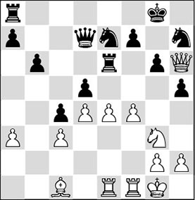
5.f5 gxf5 6.♕xh5 dxe4
It is clear that 6…fxe4 fails to 7.♕xf7+.
7.♘xf5 ♘xf5 8.♖xf5
Also good was 8.♕xf5 ♖e7 9.♕xd7 ♖xd7 10.♖xe4, and the endgame with a pawn plus should be winning for White.
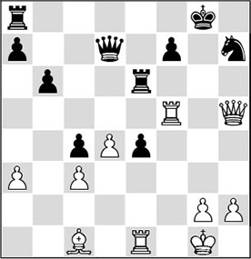
8…♖ae8
According to Kasparov, Black should have defended with 8…f6, but closer investigation shows that he would not have been able to hold either after 9.♖e3 in that case. After the text move, the pieces can be put back in the box.
9.♖e3 ♖g6
The white player has showed that 9…f6 is no longer a defence here in view of 10.♖d5! ♕e7 11.♖g3+ ♔h8 12.♗h6 e3 13.♗g7+ (even more powerful is 13.♕g6) 13…♕xg7 14.♖xg7 ♔xg7 15.♖d7+ ♖8e7, as White now has the beautiful cross-pin 16.♕e8!!.
10.♖h3
1-0
Since 10…♖g7 is no longer a solution on account of 11.♖g5!, Black resigned.
C) Restricted pawn centre
We have seen that if the centre position is stable, a player has a free hand to build a pawn storm on the flank. As a basis we have taken positions where the pawn centre has been pushed forward, making an unassailable impression.
This leads us to the idea that if the centre pawns are held back, as Richard Réti has demonstrated to us in his flank openings, we might also speak of a stable situation in the centre.
This turns out to be not such a crazy thought, since, for instance, in a variation of the Sicilian Defence which is known as the Taimanov Variation, we see a pawn formation that we could schematically depict as follows:
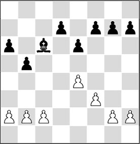
In this context, a flank attack can be a well-motivated action.
Whereas Réti was one of the so-called ‘Hypermoderns’ in his day, the chess scene of the late 20th century also had its exponent of eccentric views on the treatment of the opening: the Englishman Michael Basman.
Of Réti we know that he developed his pieces first; he fianchettoed his bishops (i.e., he placed them on the long diagonals) and kept his centre pawns back as long as possible.
In his time, the British player Basman played a kind of futuristic chess, where nothing was too crazy. He had no scruples about leaving the entire centre in the hands of his opponent ‘for free’. It is hardly conceivable, but on 1.e4 he thought 1…g5 was a playable reply, just like, for example, 1…a6. Basman managed to justify these seemingly suspect opening choices in many of his games. Everything was aimed at undermining the opponent’s play.
Basman manoeuvred against the enemy centre from two flanks, and tried to sabotage it. In many of his games he kept his centre pawns in their original positions and pointed his bishops, and also his other pieces, at the centre. If the opposing side pushed his pawns forward too quickly, Basman would find good squares for his pieces.
I have selected an example of such an eccentric set-up, on the basis of the ‘Taimanov centre’ (in this case with reversed colours).
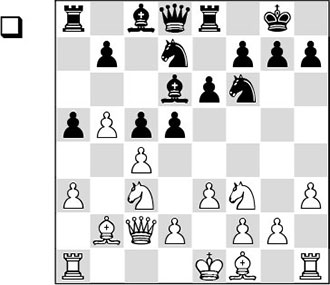
1.g4!?
A well-motivated action, since White’s central position is very solid.
1…dxc4?
This cannot be the solution. Black unnecessarily surrenders her influence in the centre, giving the white pieces free rein.
2.♗xc4 ♘b6 3.♗e2
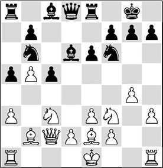
3…♗f8?!
This is much too passive.
4.g5 ♘fd7
And this makes things worse. 4…♘fd5 was the least of evils.
5.h4
White merrily pushes his pawns, and since his bishops are working from a distance and are not hampered by their own pawns (see also Chapter 12), he can quickly build up a dangerous attack.
5…♘d5 6.h5 ♘xc3 7.♗xc3 b6
Black does not undertake anything against the threat that is hanging above her head. However, it is not easy to see what she should have done. Probably, 7…♗e7, to vacate the f8-square for the knight, was necessary.
8.♗d3 f5
Pawn moves like 8…g6 or 8…h6 would also have had disastrous consequences.
9.gxf6 ♘xf6 10.♘g5
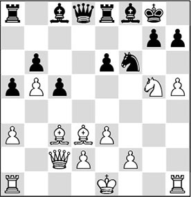
10…♖a7
Black must abandon the important h7-pawn, as 10…h6 runs into 11.♗h7+ ♔h8 12.♘f7#. But now she is counted out as well.
11.♗xh7+ ♔h8 12.h6
And Black had had enough. Indeed, she cannot prevent the long diagonal from being opened, after which the c3-bishop intervenes decisively in the attack.
White will gain material after 12…gxh6 13.♗g6 e5 14.♘f7+ ♖xf7 15.♗xf7 ♖e7 16.♕g6, and the many threats will prove fatal to Black.
11.3 When is a pawn centre bad?
We have seen a few attractive examples of playing with a pawn centre. Now the question is which methods are at the defender’s disposal for a successful operation against a pawn centre. To answer this question, I will distinguish between two defensive strategies:
A) Blocking the centre
B) Undermining the centre
A) Blocking the centre
If the pawns in the centre are blocked, mostly the player’s own pieces will be restricted in their mobility. In the chapter on the pawn islands theory, we saw how the pieces are hampered in such cases. Nimzowitsch speaks of ‘paralysis symptoms in the hinterland’. Here is an illustrative fragment:
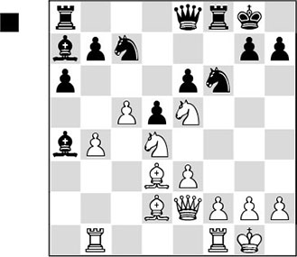
The white knights are reigning supreme in the middle of the board, and together they have firmly blocked the black pawn centre e6/d5. Looking at the lack of mobility of the black pieces we can indeed diagnose a few ‘paralysis symptoms’ here. The pieces in the ‘hinterland’ (i.e., on the queenside) have trouble being put into action on the kingside.
1…♘d7
Black tries to kick back the centrally posted knight; however, the blockading role will be taken over by a white pawn from now on.
2.f4! ♘xe5 3.fxe5 ♕e7 4.♕g4 ♗d7 5.♖f3
Another strong possibility was 5.e4.
5…♖xf3
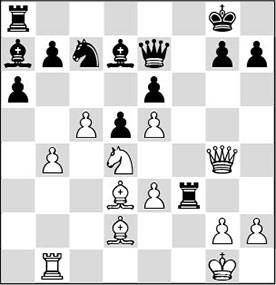
6.gxf3!
In keeping with the spirit of the position. Kortchnoi would like to maintain a strong blockade in the centre, so that he can attack on the wing to his heart’s content. The blocked centre cuts off the black pieces from the kingside, and therefore White logically starts a devastating attack on this side of the board.
6…♖f8 7.♔h1 ♗b8 8.♖g1 ♖f7 9.♗e1 ♗b5 10.♗h4 ♕d7
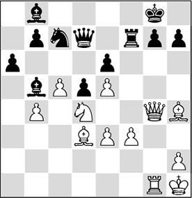
11.♘xb5!
The d3-bishop is needed for the attack, and therefore at this point it is more important than the blockading piece, which has already done good service.
11…axb5 12.♕h5 g6 13.♗xg6!
This sacrifice crowns White’s strategy; now the white pieces hurl themselves at the black king.
13…hxg6 14.♖xg6+ ♖g7 15.♗f6! ♘e8 16.♖h6 ♔f8 17.♖h8+ ♖g8 18.♖xg8+ ♔xg8 19.♕h8+
1-0
Since in such situations the pawns are tied to their posts, manoeuvring becomes much more difficult. Therefore it is important, when you possess a pawn centre, to keep the pawns mobile – in other words: not to allow them to be blockaded by enemy pieces.
In the following fragment, the white player thinks he has fulfilled this condition, but he is confronted with a nice surprise.
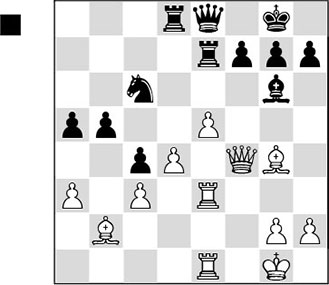
White has an unassailable pawn centre. Apart from the bishop on b2, he has put all his pieces in active positions and now he is ready to break open the kingside with e5-e6. But the great defensive artist Tigran Petrosian comes up with a beautiful parry to this threat.
1…♖e6!!
An addition to the collection of masterpieces of chess defence. Nimzowitsch would have rubbed his hands in glee if he had seen this beautiful example of his ‘blockading strategy’.
Most of the white pieces would have been activated after e5-e6. Even the bishop on b2 would have obtained some perspectives; via the e5-square, for instance. That is why Black comes forward with this rigorous blockade. At the cost of an exchange he blocks White’s pawn centre, and so the white pieces cannot develop the amount of activity that White had in mind. What’s more, as long as the pawns on d4 and e5 are nailed down by the blockade, White will hardly be able to undertake anything with his major pieces, let alone with his b2-bishop, which may well be labelled ‘bad’ now.
Another important thought behind Black’s concept is that after accepting the exchange, White will lose control of the light squares in the centre. As long as Black maintains the blockade, the white pieces will be severely limited in their mobility.
2.a4
White cannot say goodbye to his beautiful light-squared bishop just yet.
2…♘e7!
A second point of the rook move. Now that the e7-square has been vacated, Black can post his knight on the beautiful blockade square d5.
3.♗xe6
Played with a heavy heart, since with this move White gives up his best piece. But sooner or later he would have had to do this.
3…fxe6 4.♕f1 ♘d5 5.♖f3 ♗d3
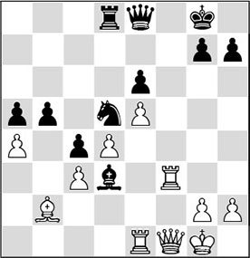
6.♖xd3
More or less forced, since after 6.♕f2?, Black would even get the upper hand with 6…b4.
6…cxd3 7.♕xd3 b4
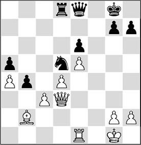
8.cxb4
How accurately Black has envisaged everything is made clear by the variations that occur after 8.c4, a move which does not look unattractive for White. After 8…♘b6! the white centre pawns remain neatly under control. As long as the black rook and knight are standing guard, White will not be able to carry out the liberating push d4-d5, and he will only be hindered by the weak pawns on a4 and c4. The violent attempt 9.d5 exd5 10.e6 is also doomed to failure after 10…dxc4.
8…axb4 9.a5 ♖a8 10.♖a1 ♕c6
Black must remain on his guard in view of White’s troublemaker on the a-file.
11.♗c1
The bishop is repositioned on a more active square.
11…♕c7 12.a6 ♕b6
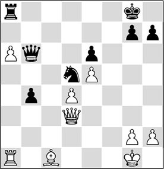
13.♗d2
After this move, the position peters out, but also after the better 13.♕c4 ♘c7 14.a7 ♖xa7 15.♖xa7 ♕xa7 16.♕xb4 ♘d5, the strong knight would guarantee Black a comfortable draw.
13…b3 14.♕c4 h6 15.h3 b2 16.♖b1 ♔h8 17.♗e1
And here the players agreed to share the point. A gripping battle.
B) Undermining the centre
A pawn centre is especially strong if the pawns are standing next to each other. Together, the pawns control important squares, preventing the enemy pieces from developing activity in the centre.
Obviously, such a pawn formation will be subject to undermining attempts by the enemy. We can see this happening in an opening like the Grünfeld Defence. In some variations, Black hands his opponent a strong pawn centre, and then tries to undermine it.
After the moves
1.d4 ♘f6 2.c4 g6 3.♘c3 d5 4.cxd5 ♘xd5 5.e4 ♘xc3 6.bxc3
White is the ‘proud owner’ of a strong pawn centre. However, after
6…♗g7 7.♗c4 c5 8.♘e2 0-0 9.0-0 ♘c6 10.♗e3 ♕c7 11.♖c1 ♖d8
Black goes on the warpath, fiercely firing away at White’s centre. Black hopes to lure the white centre pawns forward, which would give him squares for his pieces, and furthermore he wants to attack or try to block the advanced pawns again at a later stage.
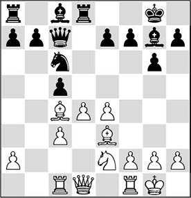
We have seen that far advanced pawns (in spite of the tactical chances that they offer) can easily become weak. We can point at another aspect of the method of luring centre pawns forward: the farther they are advanced, the more space will be created behind the pawns, and the more dangerous the counterchances of the opposite side will be. We have already seen something similar with the case of the failed flank attack (Kroeze-Grooten, page 164).
You can compare it to a soccer game, where one side is playing with all players on the opponent’s half. If the ball is lost, there is suddenly a whole lot of space for the other team to counter. Louis van Gaal, the well-known Dutch trainer, calls this ‘many players of the own side in front of the ball’, which may result in risky situations before one’s own goal.
The idea of drawing out the opponent was what Alekhine more or less envisaged when he introduced his Alekhine Defence. After the moves
1.e4 ♘f6 2.e5 ♘d5 3.d4 d6 4.c4 ♘b6 5.f4 dxe5 6.fxe5 c5 7.d5 e6 8.♘c3 exd5 9.cxd5
Black has lured the white centre forward, and now, with 9…c4!? he hopes to dive behind the white lines. Of course, such a strategy is quite risky, as the pawns are not exactly harmless when they have advanced thus far.
On occasion, I have adopted an even more extreme approach. In the following game, fearing my opponent’s theoretical knowledge, I brought the following, rather provocative moves on the board.
AL 1.1 (B02)
1.e4 ♘f6 2.e5 ♘g8!? 3.d4
At this moment a number of people approached our board, some of whom started to inspect the scoresheet. It looks strange: White has already advanced two pawns quite far, whereas all Black’s pieces are neatly arranged on their original squares.
I remember thinking here that Steinitz, who once wrote jokingly that in his opinion the starting position was perfectly OK, would be satisfied!
The idea of the knight retreat is that, in the Alekhine Defence, after White’s push c2-c4 the knight is very bad on b6, whereas from g8 the knight will be able to jump to the vacated square f5. Another idea, entirely in Alekhine’s spirit, is that Black still leaves open the options of either attacking the centre with …d7-d6 or closing the position with …d7-d5.
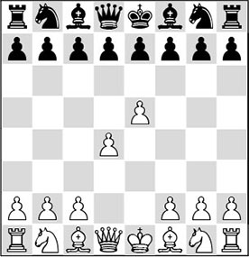
3…d6 4.♘f3 ♗g4 5.♗e2 e6 6.0-0 ♘e7
Black takes his knight to the attractive f5-square as soon as possible.
7.exd6
A concession, handing Black a majority in the centre. An important alternative is 7.♘bd2, intending h2-h3.
7…cxd6 8.c4 g6 9.♘c3 ♗g7 10.♗g5 h6 11.♗h4 g5 12.♗g3 0-0 13.h3 ♗h5 14.♗h2 ♘bc6 15.d5 exd5 16.♘xd5 ♘xd5 17.♕xd5 ♖e8 18.♕d2 ♕f6 19.♖ab1
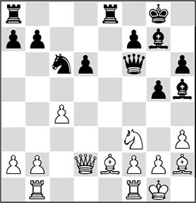
Here I thought the time was ripe for a sacrifice, but whether Black will be the better for it remains questionable.
19…♖xe2!?
After the normal 19…♖e6, Black is a tad better.
20.♕xe2 ♘d4 21.♕e3 ♗xf3 22.gxf3 ♘xf3+ 23.♔g2 ♘h4+ 24.♔h1 ♕f5 25.♖bd1 ♗e5?!
Now 25…♘f3 should have been preferred, which, after 26.♔g2 ♘h4+, would have ended in a repetition of moves.
26.f4!
During the game I thought that this was asking too much from the white position, but actually it is his best chance.
26…♕c2 27.♕f2?!
In approaching time-trouble, the white player is starting to make slight inaccuracies. With 27.♖d2 ♕xc4 28.♕d3! he would have retained every chance of a win.
27…♕e4+ 28.♔g1
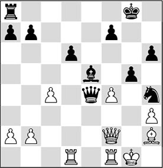
28…gxf4!
Black keeps sacrificing fearlessly. Now that the white centre has been blown apart and the white king is feeling the draught, this knight sacrifice is fully justified.
29.♕xh4?
This capture is much too dangerous. Necessary was 29.♖de1 ♕g6+ 30.♔h1 ♘f5, when the chances are balanced after 31.♕f3!.
29…♔h7
This way the rook will also be able to intervene.
30.♖f2 ♖g8+ 31.♔f1 ♕xc4+ 32.♔e1?
This loses quickly, but also after 32.♖e2 ♖g2, White would draw the short end of the stick.
32…♖e8 33.♔d2 ♗xb2
0-1
In most cases, the side with a pawn centre will be subjected to a ‘demolition job’ by the opponent. In the following game we see a beautiful demonstration of these undermining tactics.
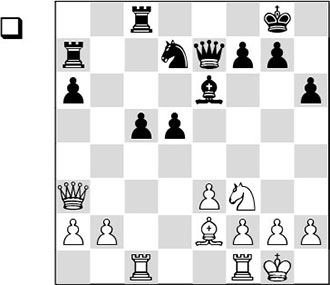
We see the hanging pawns that we have come to know in the previous chapter. A number of features lead us to the conclusion that Black is in trouble in this position. Firstly, his pieces are defensively placed – not offensively, as they should be. The white pieces are well positioned to increase the pressure on Black’s centre pawns. Especially the position of the queen on a3 is beautiful. White now comes forward with a remarkable concept.
1.♘d4! ♕f8?!
This move was heavily criticized after the game. According to the experts in Reykjavik, Spassky ought to have played 1…♘f6 here. After 2.♘b3 Black can either persist with his wait-and-see attitude with 2…♘d7, or go for the position after 2…c4 3.♕xe7 ♖xe7 4.♘d4. Even though White controls the strong d4-square here, Euwe thinks that Black will get counterchances along the b-file.
Gligoric, however, assesses that White has a huge advantage in this position, and I think he is right. Please compare this position with the game Bertok-Fischer from the previous chapter, and look at the differences. White now has his knight on the beautiful d4-square, while Black’s counterchances along the b-file are considerably less without the queens. After the text move, Fischer makes a stunning decision.
2.♘xe6
At first sight, this is very curious. White should apply pressure to the black pawn formation, but instead he exchanges his strong knight for the weak black bishop and strengthens Black’s centre. The justification of this exchange is in the next move.
2…fxe6
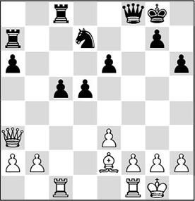
3.e4!!
Herein lies the secret of White’s idea. It turns out to be an illusion that the black centre is strengthened by the exchange. With the text move, it is thoroughly undermined.
3…d4?
This is an interesting moment to investigate the position more closely. Gligoric does not give any comment; Euwe and Fine disapprove of the text move. The Dutch former World Champion gives the alternatives 3…c4 and 3…♘f6; Fine considers 3…dxe4 to be the best possibility.
On the authority of Kasparov in My Great Predecessors IV, I am copying the question mark. It is undoubtedly true that White will be able to put pressure on the black centre in all cases. In the position that arises, his bishop is stronger than the knight, whilst his rooks will be able to intervene quickly along the central files. With the text move, the black pawn centre is weakened, and White can play his bishop to the strong c4-square.
4.f4
Now that White has a pawn majority on the kingside, he advances it.
4…♕e7
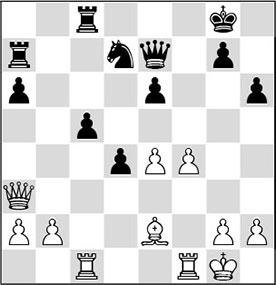
5.e5!
With this move White fixes the black pawn on a light square and at the same time increases his space advantage. What’s more, he reduces the activity of the black knight to a minimum.
If he had allowed …e6-e5, his chances of an attack would have diminished considerably.
5…♖b8?!
It seems that it just wasn’t Spassky’s day. Many commentators have deeply studied the defensive plan with 5…♘b6, with the intention to play the knight to d5 and bring a possible …c5-c4 into the position.
Kasparov punches holes in a great number of these analyses, and concludes that White should continue with the unexpected move 6.♕d3!, intending to set up a dangerous battery with ♕e4 and ♗d3. After exhaustive analyses it becomes clear that White has the better of the play, but that Black is still very much in the game in that case.
6.♗c4 ♔h8
Now that Black has put his rook on b8, the strong bishop cannot be driven away from c4 with 6…♘b6, since White would again have the response 7.♕b3!.
7.♕h3! ♘f8
The knight is extremely passive here, and so White can quietly work on a lethal final offensive. Also after 7…♖xb2 8.♗xe6, Black would have had a hard time. The white pawns in the centre march on irresistibly.
8.b3 a5
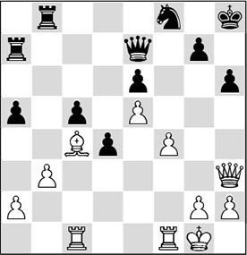
9.f5!
White further increases the influence of his bishop and opens a file to activate his rooks.
9…exf5 10.♖xf5 ♘h7 11.♖cf1
Not 11.♖f7?, in view of 11…♘g5.
11…♕d8 12.♕g3
The undermining of the black pawn centre is now quite unpleasantly felt. White can take his time to build up an attack on the king.
12…♖bb7 13.h4 ♖e7 14.e6
White can permit himself to give up the f6-square, since …♘f6 can almost always be met with an exchange sacrifice.
14…♖ac7 15.♕e5 ♕e8 16.a4
This move emphasizes Black’s powerlessness.
16…♕d8 17.♖1f2 ♕e8 18.♖2f3 ♕d8 19.♗d3
White directs his full attention to the other diagonal.
19…♕e8 20.♕e4
Now the threat is 21.♖f8+, after which Black gets mated.
20…♘f6
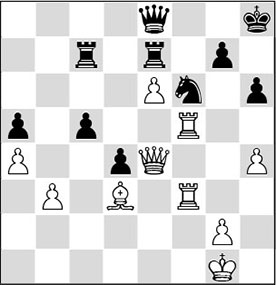
21.♖xf6! gxf6 22.♖xf6 ♔g8 23.♗c4 ♔h8 24.♕f4
1-0
Conclusion: A pawn centre is especially strong if the pawns can march side by side, and if the space behind them is well covered. The opposite side should try to undermine or block such a pawn avalanche.
Exercises
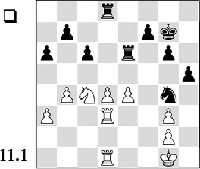
White disposes of a centre in which the pawns are neatly arranged beside each other. In order to protect the e4-pawn, White plays 29.♘d2. How can Black undermine the centre now?
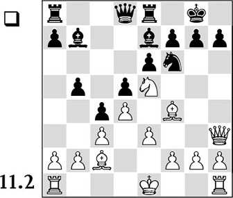
In the diagram position White, to move, has a massive pawn centre. Which plan should he choose?
A) Kingside castling followed by f2-f3 and a later e3-e4;
B) Kingside castling followed by g2-g4;
C) Queenside castling, and then the pawn storm with g2-g4;
D) Keep the king in the centre and advance on the flank with g2-g4.
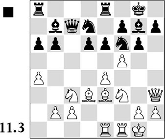
With 15.f5 White has given the signal for the attack. How should Black react?
A) 15…exf5;
B) 15…gxf5;
C) 15…e5.
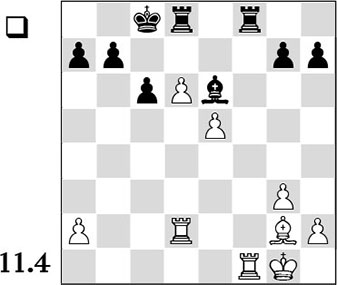
White has two strong pawns in the centre. How can he increase his advantage?
A) White plays ♖xf8, h2-h4, ♔h2 and ♗h3, to exchange the bishops. Then his centre pawns become mobile;
B) White plays ♖f1-f4, to double on the f-file. An exchange on f4 will further strengthen White’s centre, and White can try to invade on the queenside with his rook;
C) White plays ♖xf8, a2-a3 and ♖f2, exchanging all the rooks. In the bishop ending the advantage of his centre pawns will grow.